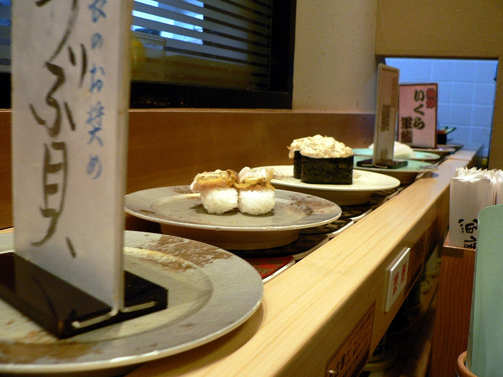

DINNER TILE
案2 / 5
案2
帯なし
帯をなくして写真は100%そのまま。ジャンル・店名・時間は写真の下の紙面に縦に置く案。料理写真が一番大きく見える。

Sushi · conveyor belt
Kura Sushi
11:00 – 00:00
Ramen · the famous queue
Mutekiya
10:30 – 4:00
Shabu-shabu · all-you-can-eat
Shabu Sai
11:00 – 22:00
Tonkatsu
Tonkatsu Wako
11:00 – 22:00
Yoshoku · hamburg steak
Uchouten
Dinner 18:00 – 20:45 · closed Sun
← 5案の見比べに戻る